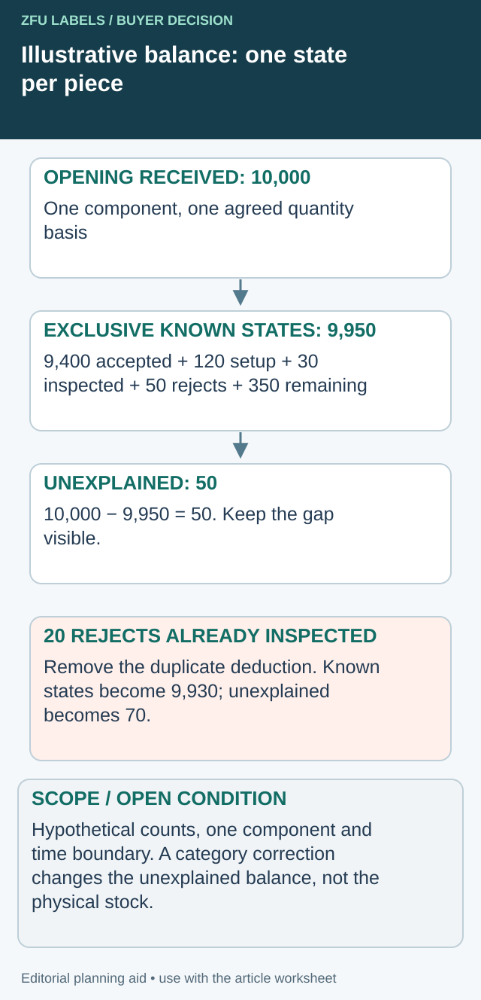

The packing line runs out of labels even though the delivery note says the order was complete. The buyer sees a shortage; the printer sees a shipped quantity; the co-packer remembers setup waste. All three may be counting different things.
Reconcile the quantity in stages: ordered, shipped, physically received, inspected, consumed and still usable. Keep non-label liner, rejected pieces and application losses separate. This makes a shortfall explainable without assuming either a supplier counting error or a production waste problem before the evidence is available.

Close the quantity with one state per piece
A count ledger becomes misleading when the same rejected label appears as inspection loss and again as line scrap. Define mutually exclusive closing categories for the reconciliation boundary. Keep event history separately: a piece can pass through several events over time, but it should not occupy two final quantity states at once.


Here is a hypothetical numerical demonstration for one label component and one closed reporting boundary. Assume 10,000 received pieces on an agreed count basis. It is not a measured production rate, supplier shortage or recommended allowance.
| Exclusive closing category | Example pieces | Evidence needed in the actual job |
|---|---|---|
| Applied to accepted packs | 9,400 | Matching component and finished-run record |
| Setup use | 120 | Distinct recorded use, not included again as rejects |
| Destructively inspected | 30 | Sample origins and consumption record |
| Identified rejects, excluding prior categories | 50 | Separate material/disposition record |
| Usable stock remaining | 350 | Identified current balance and count basis |
| Unexplained difference | 50 | Visible open reconciliation item |
The known categories total 9,950; 10,000 minus 9,950 leaves 50 unresolved. Do not force that difference into rejects merely to close the sheet. If 20 of the reported rejects were actually the same labels already counted as destructive inspection, remove the overlap from one category. With the other example figures unchanged, the unexplained difference becomes 70. That corrects classification; it does not create 20 new lost labels.
Keep holds, returns and consumption in their proper place
A roll moved to hold is still physical stock. Under a ledger that separately reports held balance, transfer it out of available stock without counting the transfer as consumption. A returned partial roll likewise changes location or availability; its pieces should not remain in both a line balance and a warehouse balance.
Choose one time boundary and one component unit for the calculation. A cumulative issued quantity cannot be added to end-of-run remaining stock as if they were parallel outcomes. Record whether a number is an observed count, agreed declaration or estimate, because an unexplained difference can come from uncertainty in more than one row.
Use the closed ledger to locate the next evidence request: receiving reconciliation, sample-use record, setup log or partial-roll recount. Investigate that gap before assigning fault. A balanced ledger is a consistency check, not proof of correct artwork, acceptable material or a complete traceability system.
Agree the counting unit first
State whether the order quantity means individual label pieces, complete front-and-back sets, printed positions on a web or finished saleable packs. A bottle using a front label and a back label needs two components. A total of ten thousand unspecified pieces does not establish that five thousand complete sets were supplied.
Ask how the supplier reports quantities for each roll and artwork. A nominal roll quantity is useful for planning but should be distinguished from a confirmed roll count and any declared tolerance. Keep the roll identifier beside the number so a carton total can be traced to its contents.
The SKU quantity guide addresses allocation between products. Here the decision is whether the quantity record accurately follows the delivered material through receipt and use.
Do not count the web as though every repeat were usable
A continuous web may contain leaders, trailers, splices, intentionally blank positions or identified rejected labels, depending on the agreed supply format. Ask which of these are included in the supplier's reported quantity. The answer belongs in the purchase specification, not in an assumption made when the roll reaches the machine.
If a counter measures web length or repeat positions, confirm what that measurement represents and how exceptions are handled. An observed number on a counter is not automatically a net usable label count. Conversely, a splice is not automatically a lost label; its effect depends on the actual joint and the agreed line procedure.
Use the splice acceptance guide to define joint records. Do not deduct the same affected labels once as a supplier exception and again as line waste.
Keep a quantity reconciliation ledger
| Stage | Quantity to record | Evidence |
|---|---|---|
| Ordered | Pieces by SKU, revision and component | Approved PO and specification |
| Reported shipped | Supplier quantity by roll/carton | Packing list and roll marks |
| Received | Physical rolls and stated counts | Receiving record and discrepancies |
| Inspection consumed | Removed or destroyed pieces | Sample record with roll origin |
| Identified unusable | Segregated pieces under agreed criteria | Defect record and disposition |
| Production consumed | Pieces used in setup and packing | Line record by component |
| Finished packs | Complete packs produced | Packing count and component ratio |
| Remaining usable | Confirmed balance by roll | Recount or agreed inventory method |
Do not add all rows together; they are stages and categories in a flow. Define the relationship for your process and keep the same units throughout. A label that moves from available stock to setup consumption should not remain in the available balance.
Work through an illustrative discrepancy
Suppose a hypothetical order contains two thousand front labels and two thousand back labels. The packer uses thirty front labels and ten back labels during setup. Before any other loss, the remaining components can support no more than one thousand nine hundred seventy complete sets. The unused back labels do not make up for missing fronts.
These figures are arithmetic examples, not observed production rates or recommended waste allowances. The useful step is to track each component separately. Ask the actual packer for its setup plan and records instead of applying the same percentage to every line.
If the supplier's carton marks add up correctly but one roll contains unexplained blank positions, preserve that roll identity. If the physically received quantity matches the order but production consumption is unrecorded, the missing evidence is at a different stage. A reconciliation should locate the uncertainty rather than convert it into a confident accusation.
Decide which counting method is worth the effort
Counting every label may be disproportionate for a stable supply, while accepting only a carton total may be weak for a short trial or disputed lot. Choose the method according to the order value, delivery structure, risk and agreed commercial terms. Ask whether the supplier can provide roll-level counts or a recount of the affected material.
Weight-based or length-based estimates need their own assumptions. Core weight, liner, material variation, label gaps and partial rolls can affect interpretation. Unless the method has been agreed and shown suitable for the job, describe the result as an estimate rather than an exact shortage.
Preserve the original packaging during a discrepancy review. Photographs of the roll and carton marks can connect the supplier's record to the received item. Rewinding or combining partial rolls before documenting them can remove that connection.
Keep missing-label quality separate from total quantity
A roll with the expected total number may still contain a sequence that disrupts application or produces an unlabeled pack. A roll with fewer pieces may still contain individually acceptable labels. Quantity acceptance and process suitability need separate decisions.
The missing-label investigation guide addresses containment when production may have passed an empty position. Do not release finished product solely because the end-of-run material total looks plausible.
Close the order with a usable balance
Record agreed replacements, credits or accepted deviations against the affected SKU and delivery. Keep leftover partial rolls identifiable, especially when a new artwork revision is arriving. A warehouse balance is useful only if the material is both present and authorized for its intended use.
Resolve the specific label handoff
Include opening quantity basis, disjoint consumption/hold/return categories and the stage where records diverge.
Prepare the label specification inquiry. The form opens an email draft for your review; attachments go through the listed email or WhatsApp route. Actual supply scope, pricing, samples and timing need project confirmation.
Related decisions: Label Order Tolerances: Agree the Overrun and Shortfall Before Printing; Label Lot Traceability: Link the Roll to the Finished Packing Run; Incoming Label Inspection: Define the Lot Before Choosing Samples